"Your Face. Your Drink. Your Can." — براند مشروبات من القاهرة، العميل بيسكان QR على كوباية، يرفع صورته، ويطلع له كاراكتر كارتوني خاص بيه على كل مشروب بعد كده، للأبد.

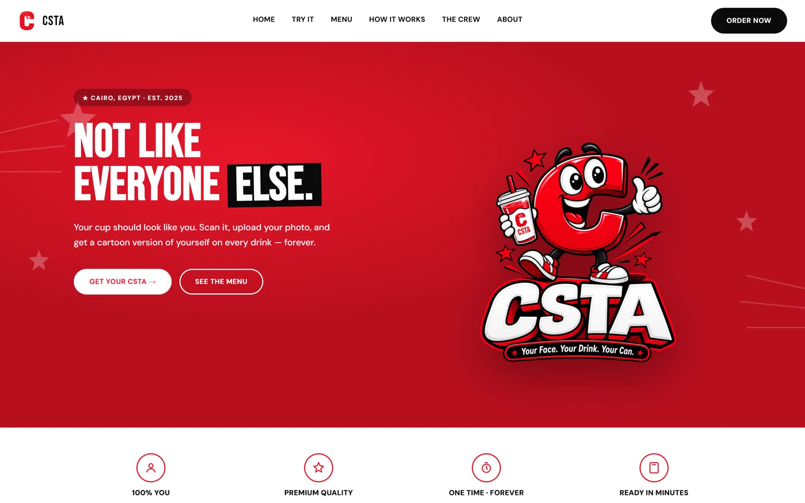
سوق المشروبات في القاهرة مليان كباية شكلها كله واحد — لوجو وشليمو واسم نكهة. CSTA كان محتاج سبب يخلي العميل يختاره تحديدًا، يفتكره، ويرجعله تاني — مش بس لوجو حلو، لكن ميكانيزم حقيقي يخلي المشروب حاسس إنه شخصي، بالإضافة لهوية كاملة وتغليف وموقع إلكتروني حقيقي يحمل الفكرة دي.
 02 — الهوية البصرية
02 — الهوية البصرية
اللوجو حرف "C" أحمر جريء بعينين متحركتين (Googly Eyes) — سهل التعرف عليه فورًا، ومناسب لبراند فكرته كلها "وشك على الكوباية". لغة بصرية شبه الكوميكس (نجوم، خطوط سرعة، خطوط سودة جريئة) بتحمل نفس الطاقة المرحة والواثقة في كل تطبيق.
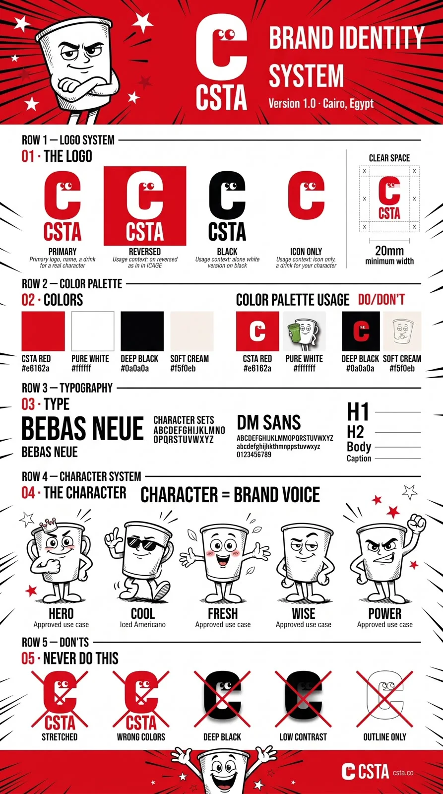
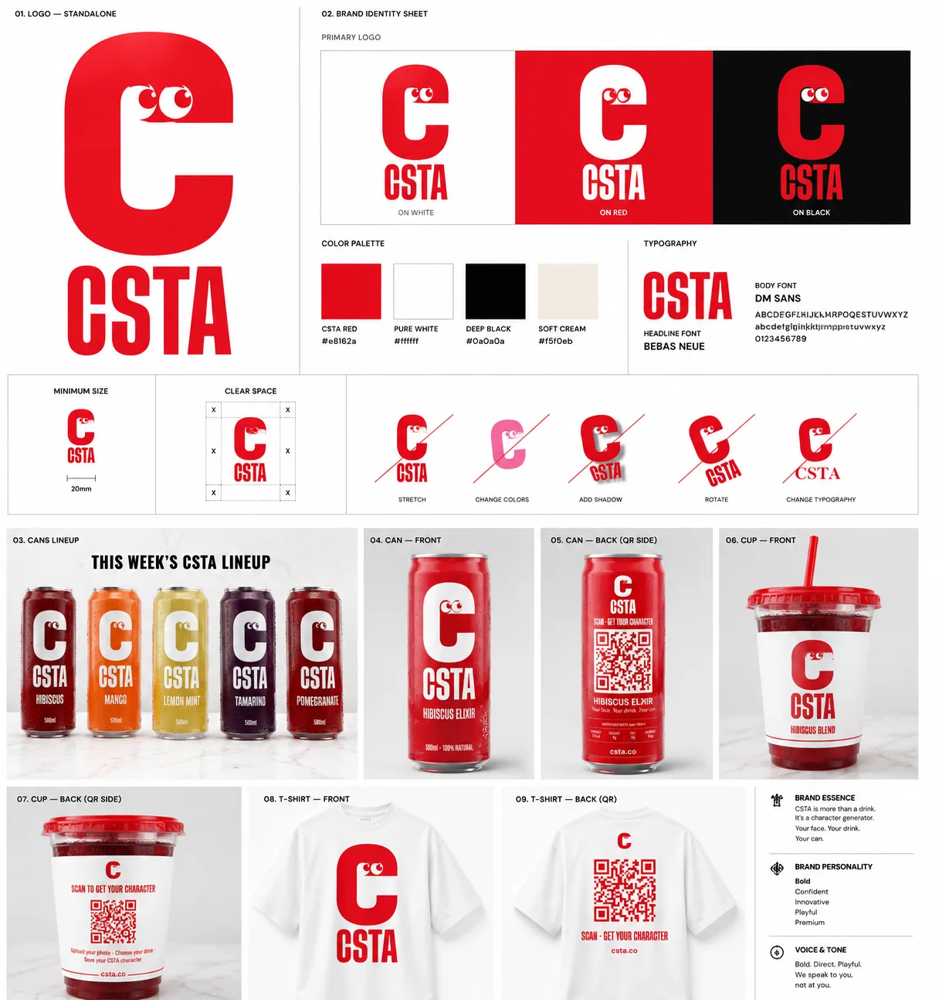
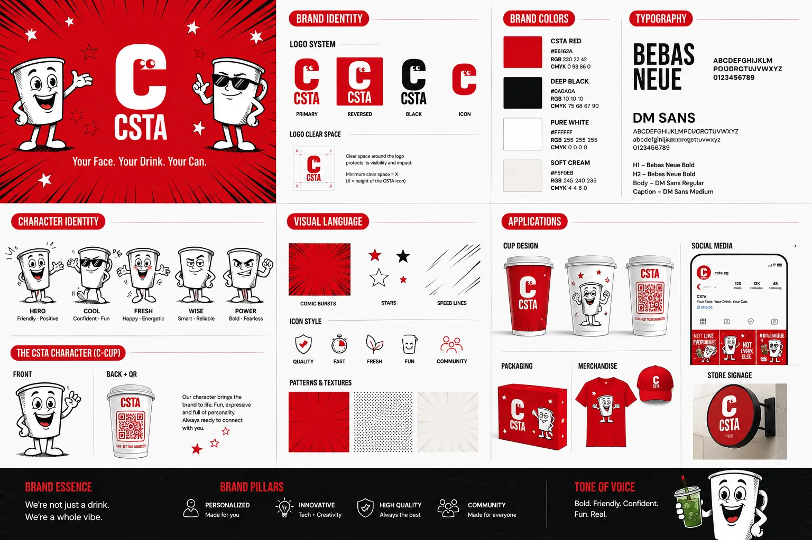
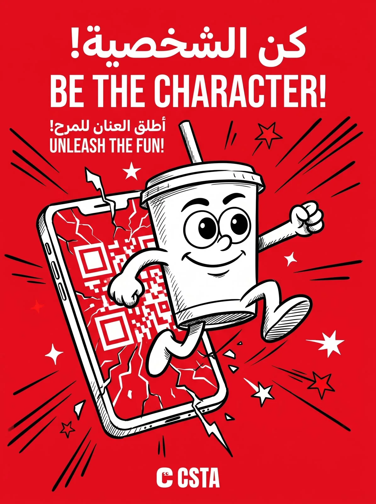
اللوجو اتصمم عشان يبان فورًا على الكان الشفاف والكوباية البلاستيك — من غير زحمة، علامة حمرا قوية واحدة، بتبان من على بعد على رف التلاجة.
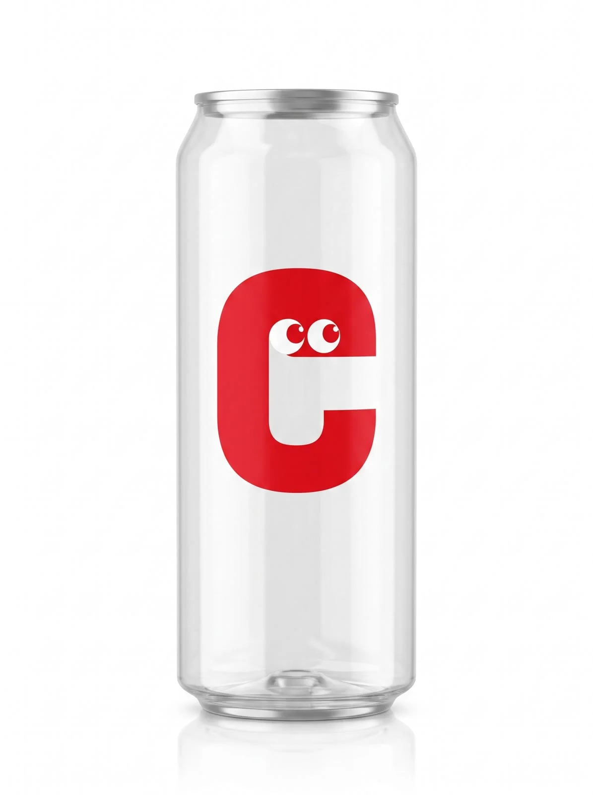
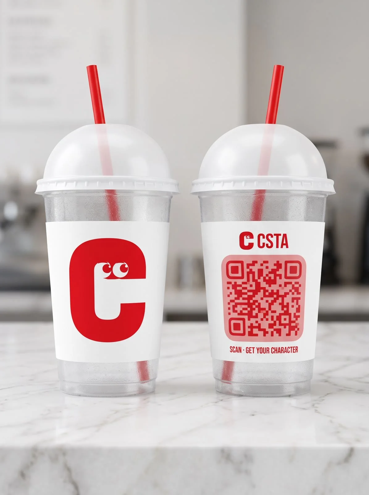
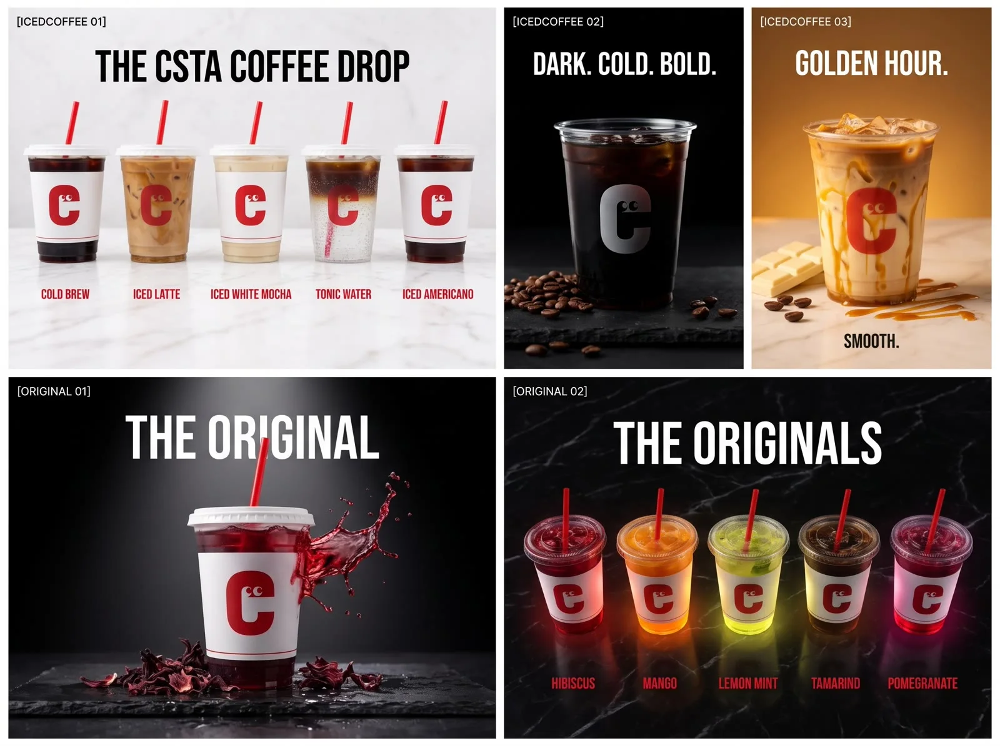
 04 — تصميم المنيو
04 — تصميم المنيو
خمستاشر مشروب على تلات خطوط (The Originals، Matcha، Iced Coffee)، كل واحد ليه تعبير كاراكتر كوباية خاص بيه يناسب شخصية المشروب — جريء لـ Tamarind، نعسان لـ Iced Matcha، مصدوم لـ Espresso Tonic.
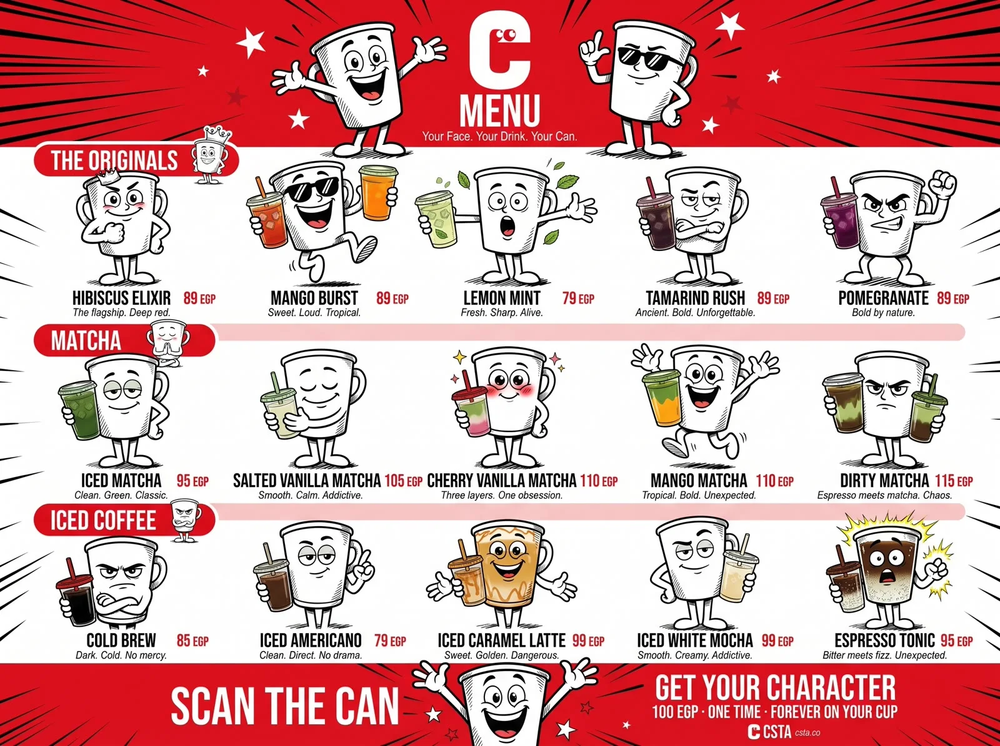
ده الفيتشر الحقيقي، مش بس جملة تسويقية: العميل بيسكان الـ QR على الكوباية، يرفع صورة واحدة، وCSTA بيولّد كاريكاتير كارتوني ليه — بيتطبع على كل كوباية بعد كده، مقابل رسوم مرة واحدة بس 100 جنيه. ده شغال فعليًا على الموقع الحقيقي تحت، مش بس في الصورة دي.
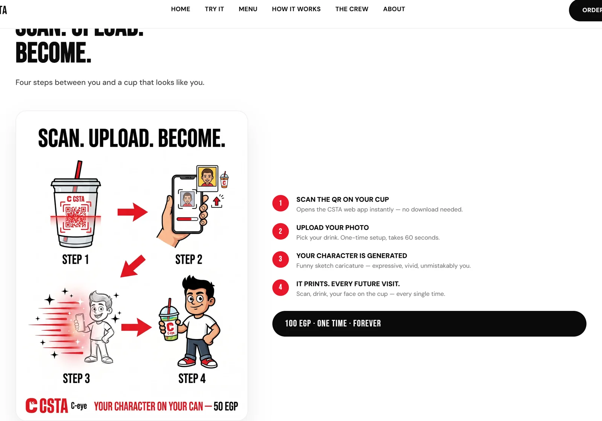
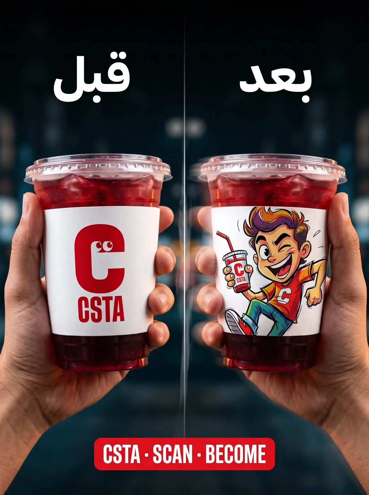
 06 — السوشيال والكامبين
06 — السوشيال والكامبين
كاروسيل إنستجرام مبني على "هوك" بياخد العميل الجديد من "بتاخد المشروب ده كل يوم" لحد "ده إنت، على الكوباية" — مبني عشان يشرح فكرة جديدة فعلًا بسرعة، مش بس يعرض صور منتج.
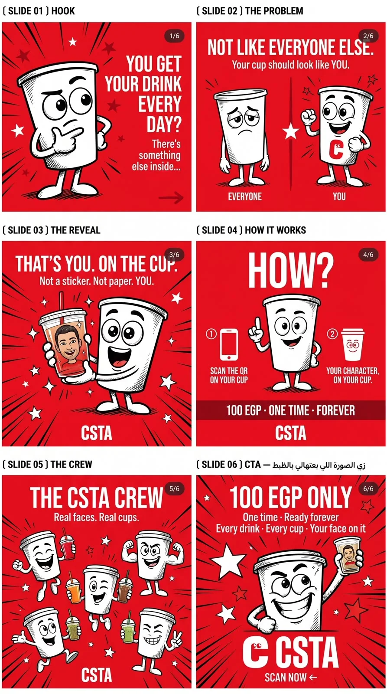
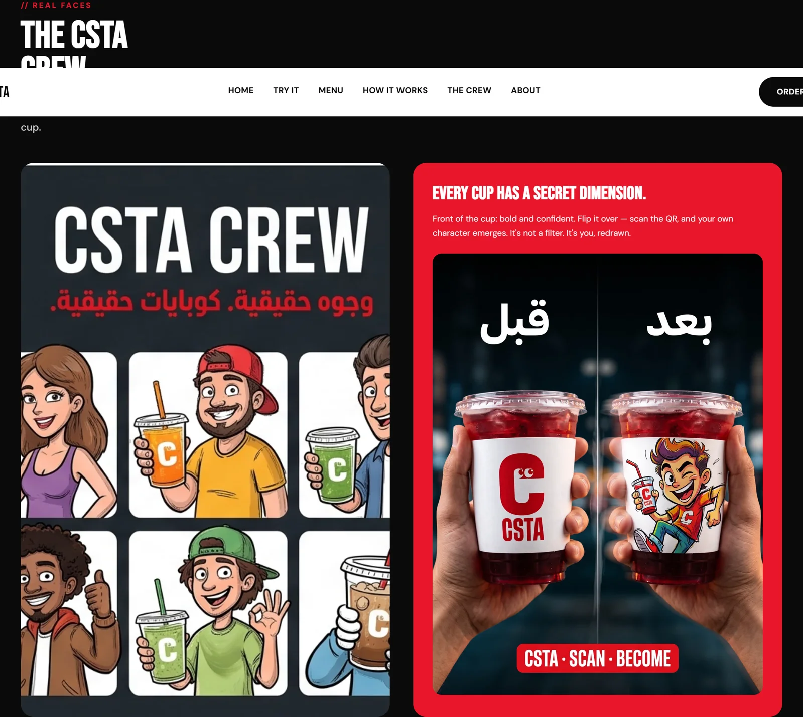
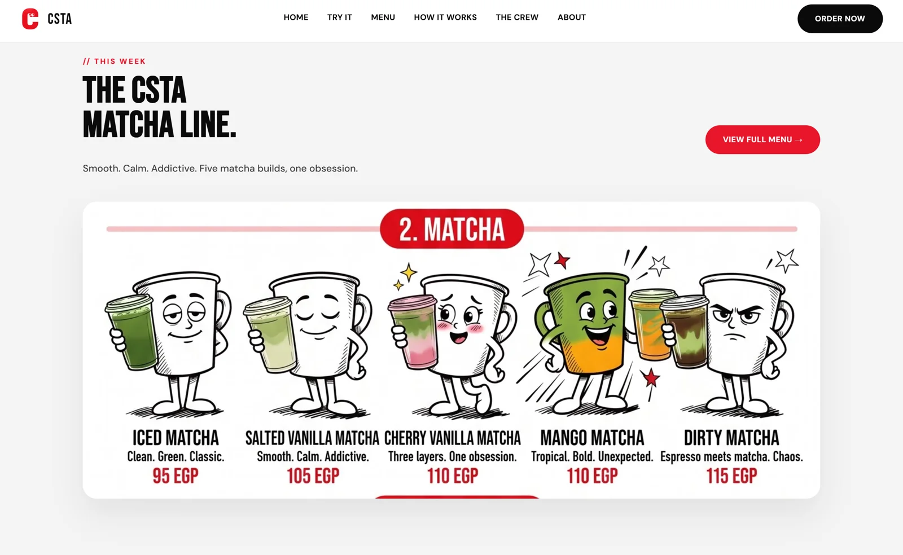
 التسليمات
التسليمات
كلّمني وابدأ مشروعك مع مازن كوستا
كلّمني على واتساب